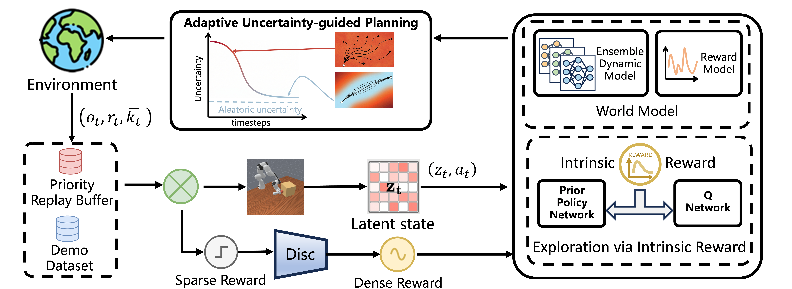
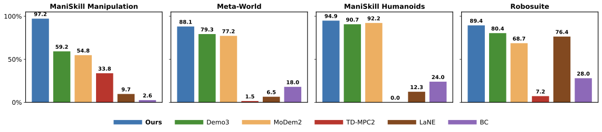
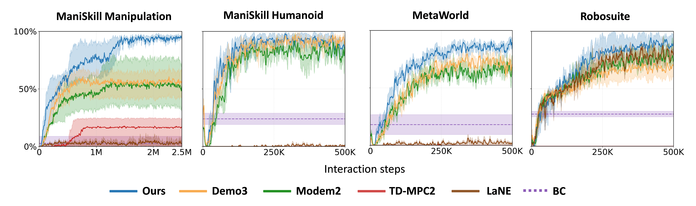
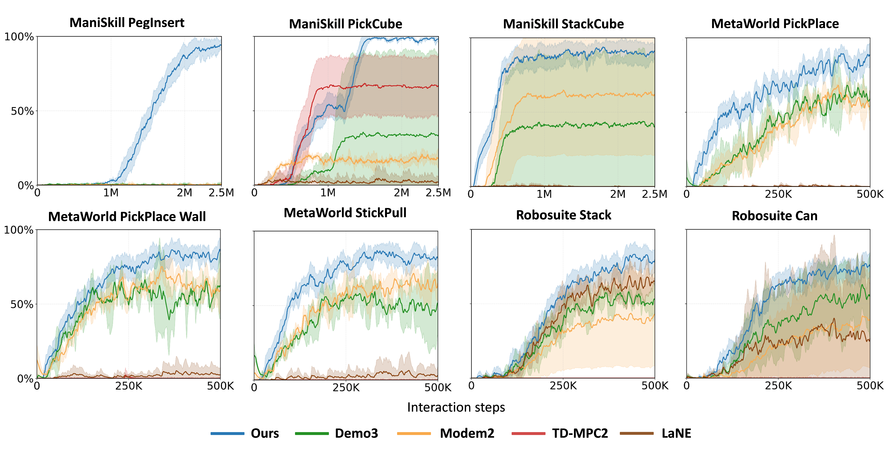
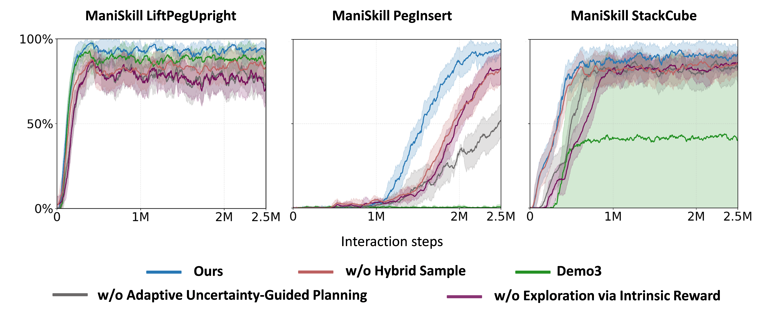
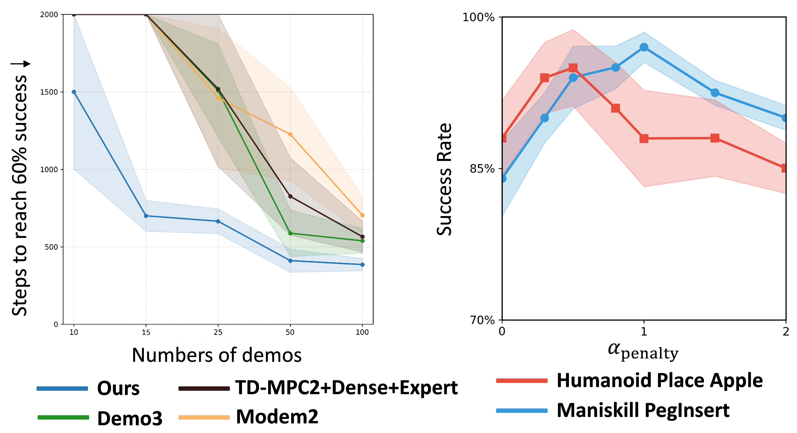
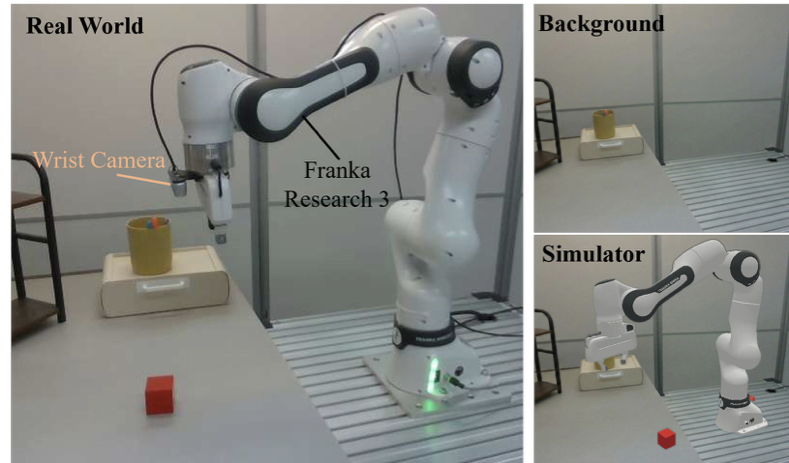

Intrinsic Reward Learning
QUEST computes RND intrinsic rewards for Q-function updates, encouraging exploration in novel states without adding intrinsic rewards directly to world-model learning.
ICML 2026
Reinforcement learning from demonstrations (RLfD) offers a promising method for robotic manipulation with sparse rewards. However, limited demonstrations often cause agents to encounter out-of-distribution states where world models produce poor predictions. In multi-stage tasks, jointly optimizing a learned reward function and policy introduces a moving target problem, and the resulting non-stationarity intensifies the impact of uncertainty on policy learning.
We propose QUEST, a model-based RL framework that adaptively switches between exploration and exploitation guided by uncertainty to achieve stable and efficient learning. QUEST employs intrinsic rewards to capture environmental stochasticity, leverages ensemble dynamics for uncertainty-guided planning, and introduces a hybrid sampling strategy to prioritize rare successful stage transitions. Experiments show that QUEST outperforms state-of-the-art methods by 17% on average, with gains increasing to 60% on difficult tasks, and enables zero-shot sim-to-real transfer on three real-world tasks.

QUEST computes RND intrinsic rewards for Q-function updates, encouraging exploration in novel states without adding intrinsic rewards directly to world-model learning.
Ensemble dynamics quantify model uncertainty, allowing planning to adaptively switch between exploration and conservative behavior in out-of-distribution regions.
The replay pipeline increases the influence of rare successful transitions, helping multi-stage policies preserve progress across long horizons.
QUEST is evaluated on 16 visual multi-stage sparse-reward tasks: 5 manipulation tasks and 2 humanoid tasks from ManiSkill3, 5 tasks from Meta-World, and 4 tasks from Robosuite, using only 10 expert demonstrations per task.



Ablations isolate the contribution of intrinsic rewards, adaptive uncertainty-guided planning, hybrid sampling, uncertainty penalty strength, and the number of demonstrations.


QUEST transfers zero-shot to a real Franka Research 3 robot on Pick Cube, Stack Cube, and Lift Peg Upright. The sim-to-real setup uses hand-eye calibration and real background textures to align simulation observations with the deployment scene.

@inproceedings{sun2026quest,
title = {Uncertainty-Guided Exploration and Stable Planning for Sparse-Reward Manipulation from Limited Demonstrations},
author = {Sun, Haowen and Huang, Liqi and Li, Mingyang and Ren, Sihua and Chen, Xinzhe and Ma, Chengzhong and Liu, Zeyang and Chen, Xingyu and Lan, Xuguang},
booktitle = {International Conference on Machine Learning},
year = {2026}
}We thank the project collaborators and reviewers for their feedback. For questions about QUEST, please contact the authors.